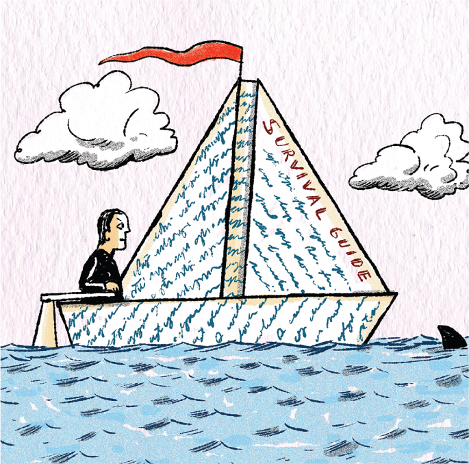

Survival Guide
研究生生存指南 - a grad school survival guide
作者：Andrew Gaudet
打印版：PDF
音频：研究生生存指南.mp3
原文：A grad school survival guide, Science 2015
自从成为博士后以来，我指导了几位即将入学的研究生。在此期间，我反思了自己在脊髓损伤修复研究方面的科研经历。我编写了一个简短的教程，旨在让博士之路更加顺畅，重点介绍研究生生活中的日常事务、需要避免的常见风险以及可以采取的捷径。这些技巧将帮助你建立和保持动力，让你的项目不断推进。不妨把它看作是研究生的实用生存指南。
- 构思和打磨好的问题。不要只是追求表现，完成眼前的工作。阅读相关资料，思考问题，与其他科学家交流，并制定计划。尖锐的问题和深入的思考能够带来新的、更好的想法。随着新成果的涌现，重新审视、修改和打磨你的问题。
- 寻求帮助。向头发花白的老博士后请教实验设计方面的建议，或者向实验室技术员寻求PCR方面的帮助。为了解决我的细胞迁移实验问题，我咨询了另一个实验室的博士后。一路走来，我学到了很多细胞培养技术，在一家知名期刊上发表了论文，并完成了博士学位。独自一人完成这些事不会获得额外的加分。
- 尊重并感激你的实验室伙伴。如果你经常和本科生或技术员一起工作，可以请他们吃午饭以表达你的感激之情。如果有人帮了你一点忙，也要在你的报告中慷慨地致谢。
- 至少要有两个项目。如果其中一个项目让你停工，你可以专注于另一个项目，保持动力。我在俄亥俄州立大学做博士后期间，研究了一种脊髓损伤后表达的蛋白质，起初看起来很有希望，但最终没有取得任何进展。幸运的是，第二种分子不仅在脊髓损伤中很重要，而且在肥胖和抑郁症中也很重要。通过将精力分散到多个项目上，你就能增加发现新奇事物的机会。
- 三思而后行。如果实验室伙伴或导师惹恼了你，请写下你的想法（谨慎而稳妥），但不要立即回复。睡一觉可以清醒头脑，让你在第二天构思出平衡、尊重的回复——如果你决定回复的话。
- 如果你需要导师的指导，可以预约一次会面。除非她喜欢保持非正式的气氛，否则最好安排一个时间来寻求指导。
- 学会何时专注。许多实验方案都有必须以特定方式执行的部分，而其他部分则更灵活。如果你了解每个步骤的功能，你就知道哪些步骤可以快速完成，哪些步骤会让你对细节的专注获得回报。
- 从你最不感兴趣的任务开始，立即完成。在研究生院学习期间，我大约上午 10 点到达工作地点，然后先阅读电子邮件、新闻和 《PHD 漫画》，然后再考虑我的第一个任务。是的，我在拖延。有时，一个简单的任务——检查动物或更换细胞培养基——会让我整天都难以应对；我不想做这件事，所以它阻碍了其他一切。所以，早上醒来后，在查看电子邮件之前，先完成一些短期的小任务。你会发现，处理好这些任务后，你一天的剩余时间会过得更好。另一方面，对于更艰巨、更长期的任务，请制定计划，并尽快迈出第一步。
- 在专注工作和短暂休息之间取得平衡。间歇性的休息令人精神焕发，并帮助你保持一整天的专注力。
- 变得有调理。在线日历可以确保你不会错过任何重要的会议、实验或研讨会。云端整理工具（例如 Evernote）可以让你访问实用信息，例如订购耗材的详细信息、实验室样品的位置以及未来实验的想法。\
在攻读博士学位的道路上，风浪可以被驾驭或完全避免。你需要每天取得许多小成就，才能实现你的长期目标。所以要保持专注。
 Along the route to a Ph.D., rough seas can be navigated or avoided entirely.” ILLUSTRATION: ROBERT NEUBECKER
{kind=link}
A grad school survival guide
Andrew Gaudet
Science 20 Mar 2015. Vol 347, Issue 6228p. 1386 DOI: 10.1126/science.347.6228.1386
Since becoming a postdoc, I've mentored several incoming graduate students. In doing so, I've reflected on my own scientific experiences studying spinal cord injury repair. I've compiled a short tutorial aimed at making the road to a Ph.D. less bumpy, with a focus on the day-to-day tasks that fill a graduate student's life, common hazards to avoid, and useful shortcuts you can take. These tips will help you build and maintain momentum and keep your projects moving forward. Think of it as a practical survival guide for graduate students.
Craft good questions. Don't just show up and do the work in front of you. Read about it, think about it, talk about it with other scientists, and plan it out. Hard questions and deep thinking lead to new and better ideas. Revisit and revise your questions as new results come in.
Ask for help. Ask that grizzled old postdoc for advice on experimental design, or ask the lab technician for assistance with PCR. To troubleshoot my cell migration assays, I sought the advice of a postdoc in a different lab. Along the way I learned a lot about cell culture techniques, published a paper in a respectable journal, and finished my Ph.D. You don't get extra points for doing it on your own.
Respect and appreciate your lab mates. If you often work with undergraduates or technicians, take them to lunch to show your appreciation. If someone helps you even a little, acknowledge them generously in your presentations.
Have at least two projects. If you have downtime on one, you can focus on another and keep your momentum. During my postdoc at Ohio State University, a certain protein expressed after spinal cord injury looked promising at first but didn't lead anywhere. Fortunately, a second molecule turned out to be important not only in spinal cord injury but also in obesity and depression. By spreading energy among multiple projects, you increase the chances of discovering something novel and exciting.
Sleep on it. If a lab mate or mentor irritates you, write down your thoughts (discreetly and securely), but don't respond right away. Sleeping on it will clear your head and allow you to compose a balanced, respectful response the next day—if you decide to reply at all.\
If you need guidance from your mentor, set up a meeting. Unless she prefers to keep things informal, schedule a time to seek direction.
Learn when to be obsessive. Many protocols have parts that must be performed in a specific manner and other parts that are more flexible. If you know each step's function, you know which steps you can do quickly and which will reward your obsessive attention to detail.
Start with the task you are least excited about, and do it right away. Midway through graduate school, I was arriving at work around 10 a.m. and then reading email, news, and PHD Comics before thinking about my first task. Yes, I was procrastinating. Sometimes a simple task—checking animals or changing cell culture media—hung over my head all day; I didn't want to do it, so it blocked everything else. So finish small, short-term tasks first thing in the morning, before you check your e-mail. You'll find the rest of your day goes better with that out of the way. For more daunting, longer term tasks, plan them out and take the first steps as soon as you can.
Balance bouts of focused work with short breaks. Intermittent breaks are invigorating and help you maintain focus for the entire day.
Get organized. Online calendars can ensure that you never miss an important meeting, experiment, or workshop. Cloud-based aggregators (e.g., Evernote) allow you to access practical information such as details for ordering supplies, locations of samples in the lab, and ideas for future experiments.
Along the route to a Ph.D., rough seas can be navigated or avoided entirely. It takes many small successes, achieved day by day, to reach your long-term goals. So stay focused.